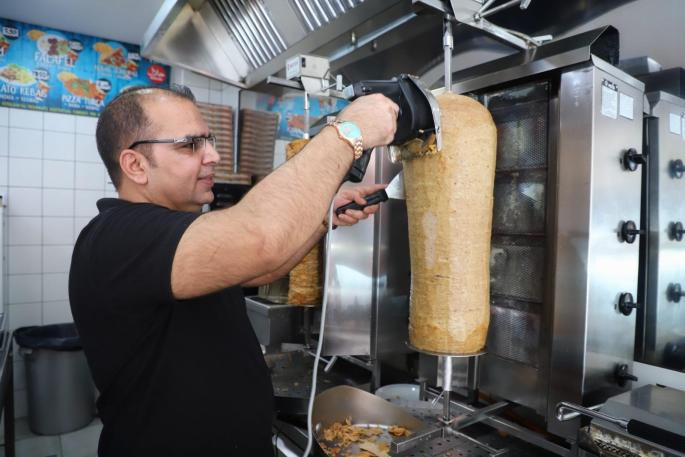

Preparación del plato
Cocinar bien la carne de kebab en una sartén, y que quede doradita.
Freir las patatas.
Preparar la ensalada con un poco de todo
Hacer la salsa blanca, con un diente de ajo trozeado, perejil trozeado, sal, azúcar y yogur griego, y ser mezcla todo.

Index
Ingredientes
Videos
Tabla